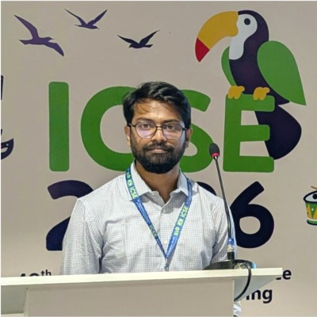

Md Nahidul Islam Opu
I study software quality by mining software repositories, from bug-prone code and tangled changes to how AI coding agents change the way software is built.

About
About me
I'm a PhD student in Computer Science at the University of Manitoba in Winnipeg, Canada, where I also completed my MSc. I'm part of the SQM Research Lab and work with Dr. Shaiful Chowdhury.
My research is in empirical software engineering. I mine software repositories to understand software quality, including bug-prone methods, tangled code changes and technical debt in test code. I also study how large language models and AI coding agents are changing software development. My work has appeared at MSR and CASCON and in the Journal of Systems and Software and the Journal of Software: Evolution and Process.
Before graduate school, I worked as a software engineer in Dhaka, Bangladesh: building .NET and React applications at Tiger IT and Enosis Solutions, and Unity games at Arcade Studios.
Research interests
- Mining Software Repositories
- Software Quality & Maintenance
- LLMs for Software Engineering
- AI Coding Agents
- Empirical Software Engineering
- Machine Learning
Latest updates
News
- Our paper “A First Look at the Self-Admitted Technical Debt in Test Code: Taxonomy and Detection” is published in the Journal of Systems and Software.
- Received the University of Manitoba Graduate Fellowship (UMGF).
- Started my PhD in Computer Science at the University of Manitoba.
Research
Selected publications
- MSR '26 LLM-Based Detection of Tangled Code Changes for Higher-Quality Method-Level Bug Datasets Proceedings of the 23rd International Conference on Mining Software Repositories (MSR '26), pp. 199–211
- MSR '26 · Mining Challenge How Do Agentic AI Systems Address Performance Optimizations? A BERTopic-Based Analysis of Pull Requests Proceedings of the 23rd International Conference on Mining Software Repositories (MSR '26), Mining Challenge, pp. 1009–1013
- CASCON '25 Understanding the Issue Types in Open Source Blockchain-Based Software Projects with the Transformer-Based BERTopic 2025 IEEE International Conference on Collaborative Advances in Software and Computing (CASCON), pp. 1–10
- arXiv Moderately Mighty: To What Extent Can Internal Software Metrics Predict App Popularity at Launch? arXiv preprint arXiv:2507.02110
- NCA Handwritten Bangla Character Recognition Using Convolutional Neural Networks: A Comparative Study and New Lightweight Model Neural Computing and Applications, 36(1), 337–348
- IJCACI 2022 Towards Quality Improvement and Prediction of Closed Questions on Stack Overflow Proceedings of the International Joint Conference on Advances in Computational Intelligence (IJCACI 2022), Algorithms for Intelligent Systems, Springer, pp. 581–595
- Computers Learn2Write: Augmented Reality and Machine Learning-Based Mobile App to Learn Writing Computers (MDPI), 11(1), 4
- ICAECC 2020 A Lightweight Deep Convolutional Neural Network Model for Real-Time Age and Gender Prediction 2020 Third International Conference on Advances in Electronics, Computers and Communications (ICAECC), IEEE, pp. 1–6
More
Explore
Experience & skills
Education, teaching, reviewing and industry roles, plus the tools I work with.
See experience →Projects
Apps I've built, from real-time bus tracking to an AR handwriting tutor.
See projects →Talks
Conference presentations, including MSR 2026 in Rio de Janeiro.
See talks →Blog
Notes on research, software engineering and grad school.
Read the blog →Contact
Get in touch
Feel free to reach out about research or collaborations: opumni@myumanitoba.ca or opu.nahidul@gmail.com.